A creative production system for a Summer Festival event in a new 3D casual Bingo game. This page is the 3-minute scan. Every claim links to full documentation in the deep-dive version.
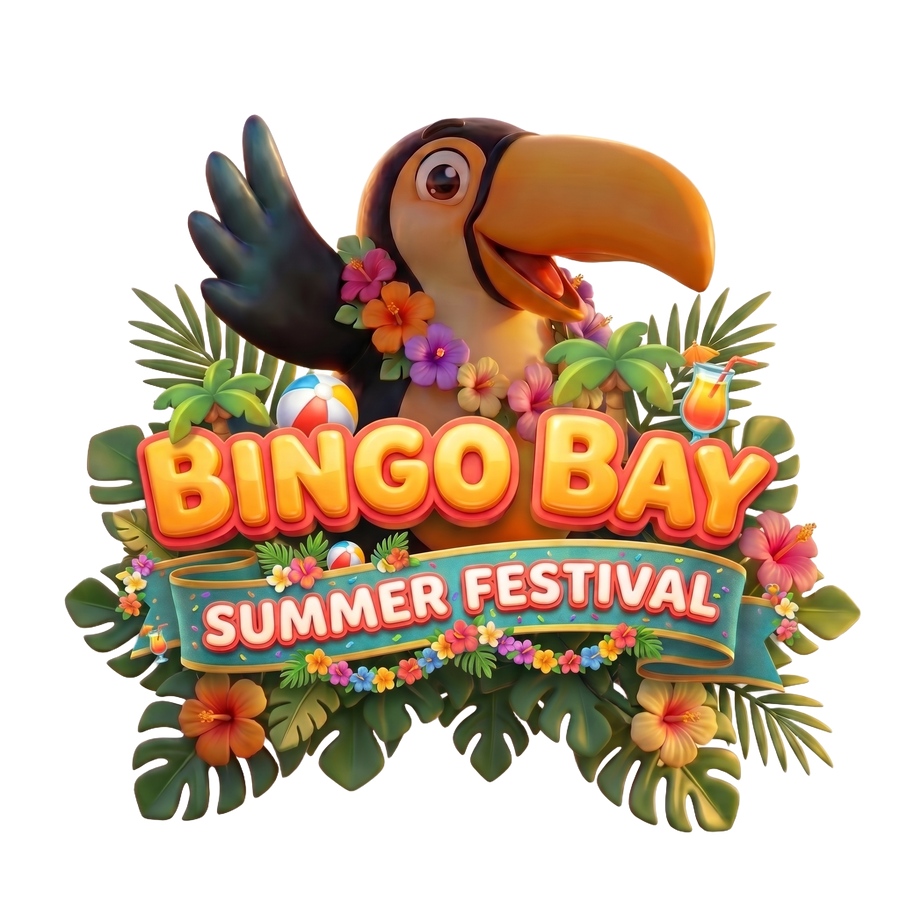
AI runs the production floor, and a human is the editor on top of it. Automate the mechanical parts, keep the judgment human. Red diamonds mark the human gate in every stage.
One locked art direction (glossy vinyl-toy 3D, golden-hour light, one warm palette). 55 generations in Nano Banana Pro on Google Flow (4-up batches), 6 keepers, every reject documented with its reason.
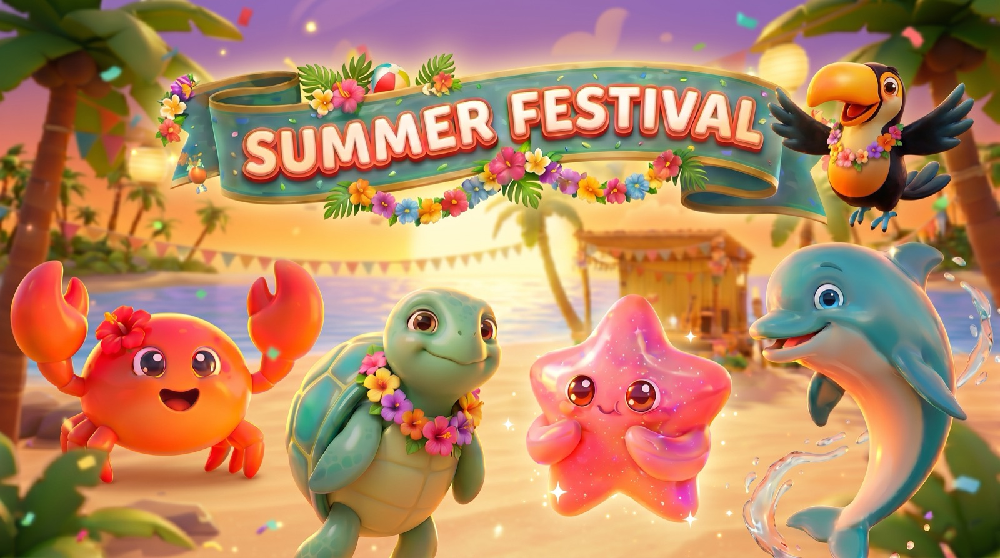
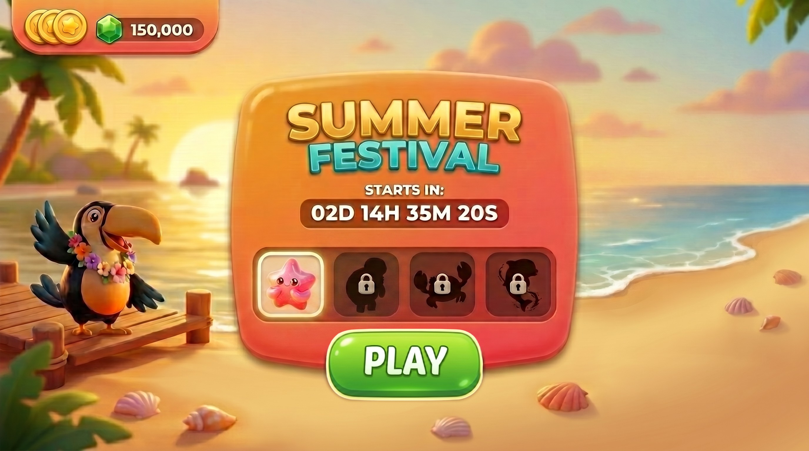
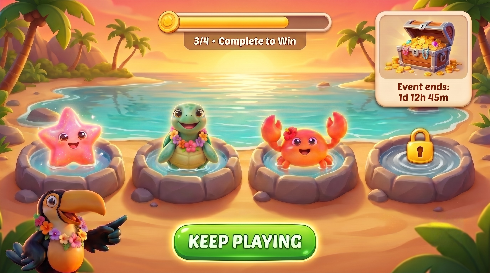
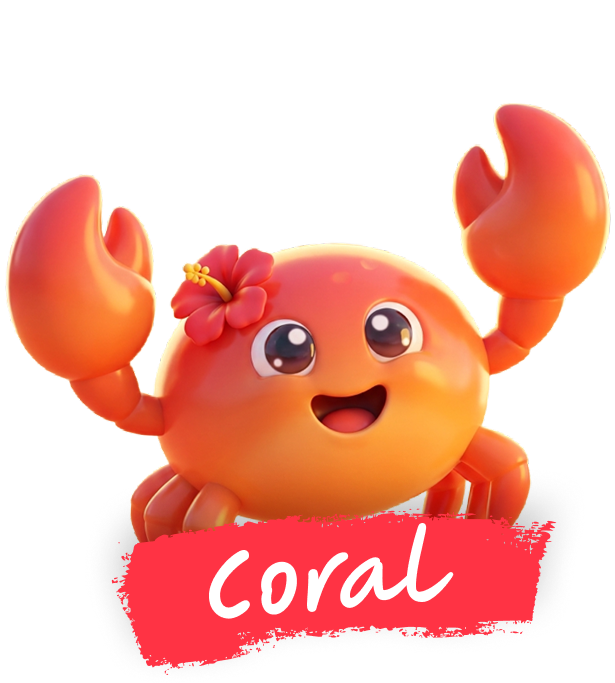
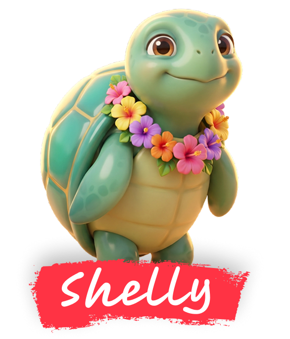
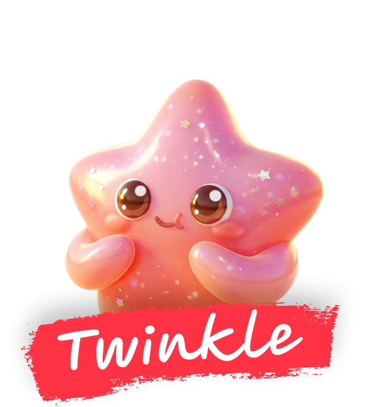
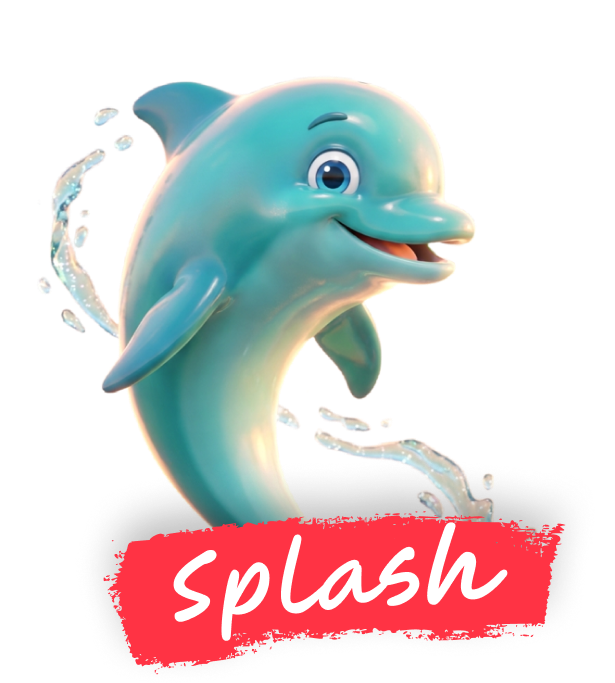
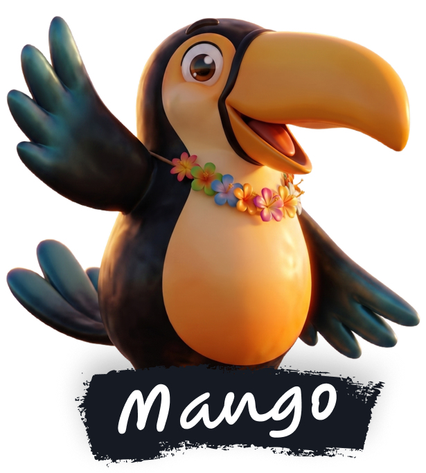
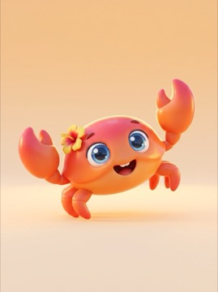
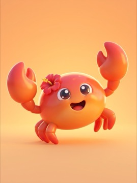
Killed for the eyes. Same prompt, but the left render has blue eyes and the whole cast is locked to brown with big catchlights. Wrong detail, so it dies. The keeper reads at icon size with the warmest smile and cleanest vinyl-toy gloss. That call, made 55 times, is the job.
Every asset request becomes a brief. The automation assembles it from the locked art direction, and a human approves it instead of writing it.
IP-safe generation legal can sign. Licensed training data with indemnification, used for every cutout in this submission. Unblocks AI art for commercial release, not just concepting.
Event UI that ships alive. Interactive animation as tiny runtime files inside the game. The lobby above gets water shimmer and pet idles in days, not sprints.
Concept to 3D draft in minutes. For a 3D title the expensive part is turning a concept into a model, and approved 2D pets become posable blockout meshes the same day.
Prompt DNA: art direction as versioned tokens owned by the AD, assembled into prompts, never freehand. Plus a working iteration log tool used live during this production.